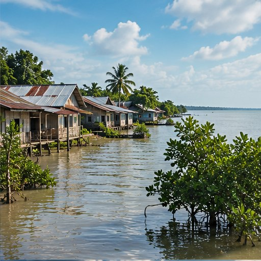

Suhu dan cuaca ekstrem
Peningkatan suhu dapat memperkuat risiko gelombang panas. Perubahan pola hujan dapat membuat sebagian wilayah lebih rentan terhadap kekeringan atau hujan lebat.
03 / MEMAHAMI RISIKO
Perubahan iklim memengaruhi pesisir, kesehatan, pertanian, ekosistem, dan kehidupan masyarakat—dengan risiko yang berbeda di tiap wilayah.
Jelajahi materi ↘
03 / RISIKO YANG TERASA
Dampak perubahan iklim muncul melalui kenaikan suhu, perubahan pola hujan, kenaikan permukaan laut, serta meningkatnya risiko sejumlah kejadian ekstrem. Dampaknya tidak sama di semua tempat dan dapat memperbesar kerentanan yang sudah ada.
Di Indonesia, negara kepulauan dengan wilayah pesisir luas, risiko dapat berkaitan dengan banjir, kekeringan, gelombang panas, gangguan pertanian, dan perubahan ekosistem. Dampak setempat perlu dipahami melalui data dan informasi resmi.
Rujukan umum: IPCC (2023), ADB (2021), BMKG, dan World Bank Climate Change Knowledge Portal.
Sumber: Greenpeace UK; Furoida (2025).
JENIS DAMPAK
Peningkatan suhu dapat memperkuat risiko gelombang panas. Perubahan pola hujan dapat membuat sebagian wilayah lebih rentan terhadap kekeringan atau hujan lebat.
Pemuaian air laut yang menghangat dan pencairan es daratan berkontribusi terhadap kenaikan muka laut. Wilayah pesisir dapat menghadapi banjir rob, abrasi, dan intrusi air asin.
Panas ekstrem dapat meningkatkan risiko gangguan kesehatan, terutama bagi lansia, anak-anak, orang dengan kondisi rentan, dan pekerja luar ruang. Banjir juga dapat mengganggu air bersih dan layanan kesehatan.
Pergeseran musim tanam, kekeringan, banjir, dan suhu tinggi dapat mengganggu hasil pertanian serta memengaruhi pendapatan petani dan ketersediaan pangan.
Perubahan suhu dan kondisi laut memengaruhi habitat spesies. Ekosistem seperti hutan, terumbu karang, lamun, dan mangrove penting bagi keanekaragaman hayati sekaligus perlindungan pesisir.
Bencana dapat merusak rumah, jalan, sekolah, dan sumber penghasilan. Kelompok dengan akses sumber daya terbatas sering menghadapi risiko lebih besar dan pemulihan yang lebih sulit.
KONTEKS INDONESIA
Risiko di tiap wilayah berbeda. Daerah pesisir mungkin lebih memperhatikan rob dan abrasi; wilayah dengan musim kering panjang perlu mengelola air; sementara kota dengan drainase terbatas dapat lebih rentan terhadap genangan saat hujan lebat.
Informasi iklim dan cuaca perlu dipadukan dengan pengetahuan lokal, kondisi infrastruktur, serta arahan pemerintah daerah.
BMKG untuk informasi cuaca, iklim, dan peringatan dini.
BNPB dan BPBD setempat untuk kesiapsiagaan dan panduan kebencanaan.
Jaga ruang hijau, daerah resapan, sistem drainase, dan ekosistem pesisir dengan perencanaan yang sesuai kondisi wilayah.
AKTIVITAS / PEMETAAN RISIKO
Pilih pertanyaan di bawah untuk memulai diskusi bersama keluarga atau teman.
Catat lokasi aman dan rawan, jalur alternatif, serta saluran air yang tersumbat. Jangan mendekati arus banjir atau kabel listrik yang terendam.
Perhatikan anak-anak, lansia, orang dengan kondisi rentan, dan pekerja luar ruang. Cari tempat teduh, minum air, dan ikuti panduan kesehatan resmi.
Gunakan kanal resmi BMKG, BNPB, BPBD, dan pemerintah daerah. Hindari menyebarkan informasi yang belum terverifikasi.
PENJELASAN TAMBAHAN
Risiko dipengaruhi bukan hanya oleh iklim, tetapi juga geografi, infrastruktur, penggunaan lahan, layanan dasar, dan kesiapan masyarakat.
Hujan ekstrem dapat meningkatkan risiko banjir dan longsor, terutama pada daerah dengan drainase buruk atau lahan rentan. Dampaknya dapat berupa kerusakan rumah dan jalan, gangguan transportasi dan sekolah, serta pencemaran sumber air. Tata guna lahan dan sistem drainase juga berpengaruh.
Periode kering berkepanjangan dapat mengurangi air di sungai, waduk, dan sumber lain. Hal ini menyulitkan akses air bersih, mengurangi pasokan bagi pertanian dan peternakan, serta dapat memperburuk kondisi yang mendukung kebakaran hutan dan lahan.
Panas ekstrem meningkatkan risiko dehidrasi, kelelahan akibat panas, dan gangguan kesehatan lainnya. Dampak tidak langsung dapat muncul melalui kualitas air, ketersediaan pangan, sanitasi, serta perubahan lingkungan yang mendukung penyakit tertentu.
Perubahan suhu, curah hujan, kondisi laut, dan kejadian ekstrem dapat mengganggu habitat hutan, lahan basah, terumbu karang, dan pesisir. Pemutihan karang, perubahan habitat, serta gangguan rantai makanan juga dapat memengaruhi pangan, pekerjaan, dan perlindungan pantai.
STUDI KASUS TEMATIK
Indonesia memiliki banyak permukiman, fasilitas umum, kawasan wisata, dan kegiatan ekonomi di dekat laut. Kenaikan permukaan laut dapat meningkatkan paparan terhadap banjir dan genangan. Abrasi serta perubahan kondisi ekosistem laut juga dapat memberi tekanan pada lingkungan dan mata pencaharian.
Risiko yang mungkin terjadi meliputi genangan yang mengganggu aktivitas, kerusakan bangunan dan infrastruktur, intrusi air asin ke sumber air tawar di lokasi tertentu, serta gangguan terhadap nelayan dan usaha wisata. Tingkat risiko bergantung pada elevasi daratan, kondisi pantai, penurunan muka tanah, infrastruktur perlindungan, dan kesiapan masyarakat.
Mitigasi dan adaptasi perlu berjalan bersama. Perlindungan mangrove, perencanaan tata ruang yang mempertimbangkan risiko, pemantauan pesisir, sistem peringatan dini, dan infrastruktur yang sesuai dapat membantu mengurangi kerentanan. Ini merupakan studi kasus tematik umum, bukan laporan satu kejadian tertentu.
Sumber: Greenpeace UK; Furoida (2025).
KEADILAN DAN KETAHANAN
Dapat lebih rentan terhadap panas ekstrem dan gangguan kesehatan tertentu.
Penghasilan dan pekerjaan mereka bergantung pada cuaca, air, laut, serta sumber daya alam.
Sumber daya yang terbatas dapat menyulitkan perbaikan rumah atau pemulihan usaha setelah bencana.
Penduduk pesisir rendah, wilayah rawan banjir, dan daerah yang sering mengalami kekeringan juga dapat menghadapi paparan risiko lebih tinggi.
KETERKAITAN SDG 13
SDG 13 atau Penanganan Perubahan Iklim mendorong tindakan untuk mengatasi perubahan iklim dan dampaknya. Mitigasi mengurangi emisi gas rumah kaca, sedangkan adaptasi menyesuaikan diri untuk mengurangi risiko dan kerugian. Keduanya memerlukan kerja sama individu, masyarakat, pemerintah, dan berbagai sektor.
JELAJAHI DAMPAK
Kenaikan permukaan laut dan perubahan kondisi pesisir dapat meningkatkan risiko bagi kawasan pantai.
Perubahan pola hujan dan suhu dapat memengaruhi ketersediaan air serta kegiatan pertanian.
Kondisi panas dan kering dapat berkontribusi pada risiko kebakaran, tetapi tidak semua kebakaran hanya disebabkan perubahan iklim.
Dampak dapat dipengaruhi banyak faktor. Perubahan iklim tidak berarti setiap banjir, kekeringan, atau kebakaran disebabkan oleh satu faktor saja.
AKTIVITAS INTERAKTIF
Mengapa kenaikan permukaan laut menjadi risiko bagi wilayah pesisir?
Pilih satu jawaban untuk melihat umpan balik. Kuis ini berjalan tanpa JavaScript.